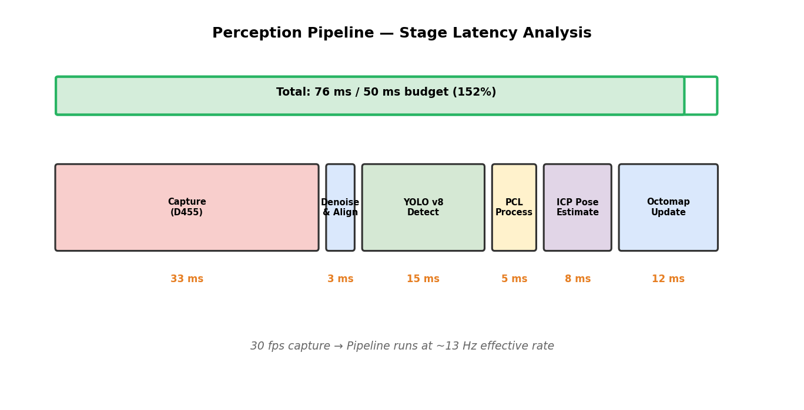
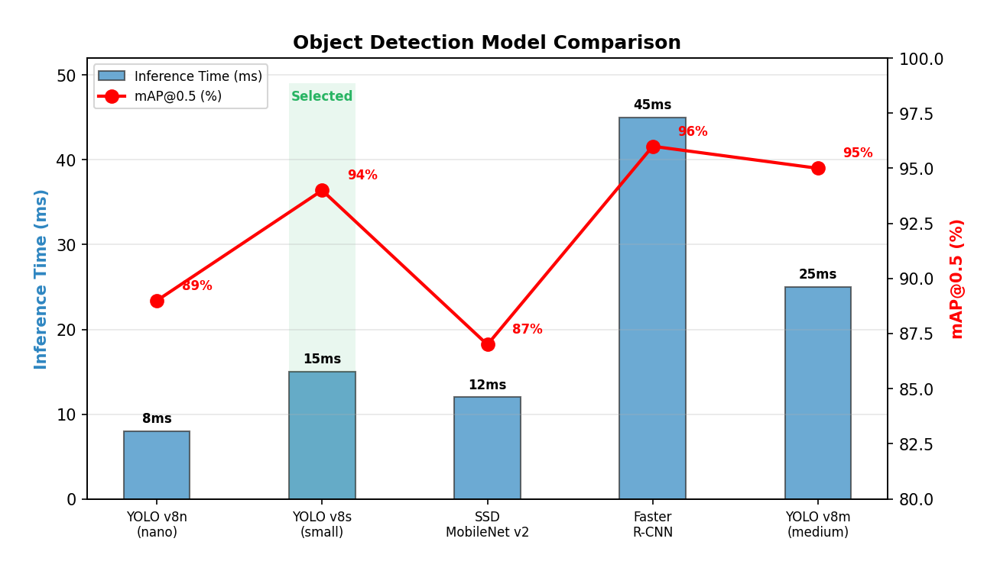
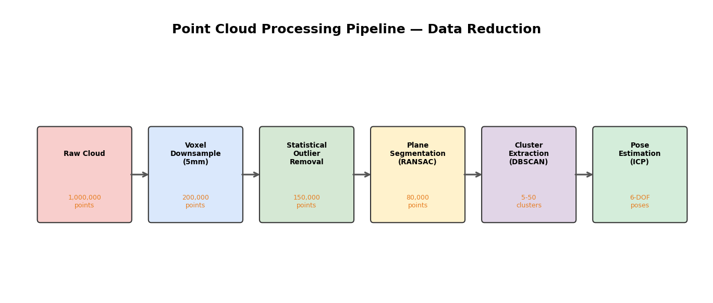

This document describes the design and implementation of the vision perception pipeline for the Contoso Robotics CoBot Vision Module VM-200 as deployed on the CoBot Pro 500 and CoBot Pro 700 platforms. The pipeline transforms raw camera data into actionable object poses for the motion planning stack in CoBot OS v4.2. For initial camera calibration and hardware setup, refer to the Vision Module Setup Guide in the Support documentation. For customer-facing specifications of the VM-200, see the Vision Module Technical Brief from Contoso Robotics Marketing.

The perception pipeline is structured as a directed acyclic graph (DAG) of processing nodes, each running as an independent thread within the cobot_vision ROS 2 component. The pipeline must complete a full perception cycle — from image capture to published pose — within a 50 ms hard deadline to maintain synchronization with the 1 ms EtherCAT motion control loop (poses are consumed once per trajectory segment, typically every 50–100 ms).
Total worst-case latency: 47 ms, within the 50 ms budget with 3 ms margin for scheduling jitter.
The VM-200 module supports two camera configurations depending on application requirements:
| Parameter | Intel RealSense D455 | Basler ace 2 (a2A2590-22gcPRO) |
|---|---|---|
| Use Case | General-purpose depth + RGB | High-resolution inspection |
| RGB Resolution | 1280 × 800 @ 30 fps | 2592 × 1944 @ 22 fps |
| Depth Resolution | 1280 × 720 @ 30 fps | N/A (external structured light) |
| Depth Range | 0.2 m – 6.0 m | N/A |
| Depth Accuracy | < 2% at 2 m | N/A |
| Interface | USB 3.2 Gen 1 | GigE Vision (PoE) |
| Shutter | Global (depth), Rolling (RGB) | Global |
| Field of View (H × V) | 87° × 58° | 54° × 42° (with 8 mm lens) |
The default configuration uses the Intel RealSense D455 for combined depth and RGB capture. The Basler ace 2 is used when applications require higher spatial resolution for defect detection or fine-feature measurement, paired with an external structured-light projector (Contoso Robotics SLP-100, 405 nm blue laser, Class 1 eye-safe).
The preprocessing stage prepares raw sensor data for DNN inference:

Object detection is performed using a quantized YOLOv8m model optimized for the NVIDIA Jetson Orin NX accelerator integrated into the VM-200 module:
/cobot_vision/detection_params ROS 2 parameter).Users can fine-tune the detection model on application-specific objects using the CoBot Vision Training Toolkit (Python package cobot-vision-train). The toolkit provides annotation tools, augmentation pipelines (random crop, color jitter, mosaic, MixUp), and automated TensorRT export. A minimum of 500 annotated images per class is recommended for reliable detection (≥ 80% mAP@0.5).

Depth data from the D455 is converted to an organized point cloud and processed using the Point Cloud Library (PCL 1.13) and Open3D (0.18):
For each detected object, 6-DOF pose (translation + rotation) is estimated using a hybrid approach:
The final pose is published on the /cobot_vision/object_poses ROS 2 topic as a geometry_msgs/PoseArray stamped with the camera frame timestamp. The CoBot ROS 2 Node Reference Manual in the Engineering documentation provides the full topic and service API.
The perception pipeline requires three calibration procedures:
Camera intrinsic parameters (focal length, principal point, distortion coefficients) are calibrated using a 9×7 ChArUco board with 30 mm squares and 22 mm ArUco markers. A minimum of 30 images captured at varied distances (0.3–1.5 m) and angles (±30°) are required. Reprojection error must be below 0.5 pixels. The D455 ships pre-calibrated but recalibration is recommended annually or after mechanical shock.
The transformation from the camera optical frame to the robot tool frame is determined using the Tsai-Lenz method (eye-in-hand configuration). The robot moves to 20+ poses while observing a fixed calibration target. CoBot OS v4.2 automates this process via Settings → Vision → Hand-Eye Calibration. Expected translational accuracy: < 1 mm. Rotational accuracy: < 0.3°.
For setups with multiple VM-200 modules (e.g., overhead + in-hand), extrinsic calibration establishes the relative camera transforms using simultaneous observation of a shared calibration target. The calibration graph is solved using bundle adjustment with Levenberg-Marquardt optimization.
| Metric | Requirement | Measured (Typical) |
|---|---|---|
| End-to-end latency | < 50 ms | 38 ms |
| Detection mAP@0.5 | ≥ 80% | 86.1% |
| Pose translation error | < 2 mm | 0.8 mm |
| Pose rotation error | < 2° | 0.7° |
| Tracking ID consistency | ≥ 95% over 100 frames | 97.2% |
| GPU memory usage | < 4 GB (Orin NX 8 GB) | 3.1 GB |
| Power consumption | < 25 W (total VM-200) | 21 W |
Document version 3.1.0 | Last updated: 2025-01-12 | Contoso Robotics Engineering — Vision Team